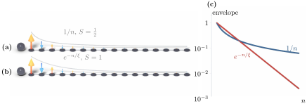
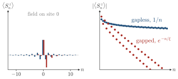

Advanced Quantum Materials 2027 · All lectures · Lecture notes
Session 9. Excitations and Defects in Quantum Materials
9.9 Impurities as diagnostics IV, screening in quantum magnets
The last case study brings us directly back to the parton construction of Session 8. We take a frustrated Heisenberg model, of the form (6.5), with a ground state similar to the quantum spin liquid of Section 8.4. This ground state has zero net magnetization on every site, and it does not break time-reversal symmetry. We add one local magnetic perturbation, and we ask how the spins around it screen it.
For \(S=1/2\) we do not need to repeat the construction from the beginning, since Session 8 already built the tool that we need. We write each spin with a pair of auxiliary (Abrikosov) fermions, \(S_i = \tfrac{1}{2}\sum_{\alpha\beta} f_{i\alpha}^\dagger \boldsymbol{\sigma}_{\alpha\beta} f_{i\beta}\), with the single-occupancy constraint \(\sum_\sigma f_{i\sigma}^\dagger f_{i\sigma} = 1\) at every site, and we make a mean-field decoupling of the quartic Hamiltonian that we obtain. As we derived in Section 8.9, this turns the Heisenberg model with a local magnetic perturbation into a bilinear Hamiltonian for the spinons, similar to a tight-binding one. The impurity gives an effective onsite term at its site, which mixes with the spinon band. We will not derive this mapping again here, and Section 8.8 gives the full mean-field decoupling with Abrikosov fermions.
What matters for us in this session is what this mapping gives us. It turns the screening of a magnetic moment inside a quantum spin liquid into the same mathematical problem as the impurity in a one-dimensional electron gas of Section 9.6. The only change is that the electrons are replaced by spinons. The induced spin correlation \(\langle S_0 \cdot S_n\rangle\), as a function of the distance \(n\) from the impurity, therefore has the same structure as (9.9). It has an oscillation set by the antiferromagnetic exchange, and it decays with distance in a way that depends on whether the spinon band is gapped or gapless.
Here the comparison between the \(S=1/2\) and \(S=1\) Heisenberg chains becomes clear. Both have a ground state similar to a spin liquid, with zero onsite magnetization when there is no impurity, and both develop an oscillating induced moment once the impurity is switched on. However, the decay is qualitatively different in the two cases.
\[\langle S_0 \cdot S_n \rangle \;\sim\; \begin{cases} \dfrac{(-1)^n}{n} & S = 1/2 \quad \text{(power-law, gapless)}, \\[6pt] (-1)^n\, e^{-n/\xi} & S = 1 \quad \text{(exponential, gapped)}. \end{cases} \tag{9.11}\]
The reason is the same reasoning as for (9.9). Through the Abrikosov-fermion construction, the spin-\(1/2\) Heisenberg chain maps onto a gapless tight-binding chain of spinons, with a real Fermi surface of two points, as for the 1D metal of Section 9.4. So the impurity response must decay algebraically, in the same way as the Friedel oscillations of a metal. The spin-1 chain, on the other hand, has an excitation gap. This is the Haldane gap, which opens for antiferromagnetic chains with integer spin. This gap sets a finite correlation length \(\xi\), and it forces the impurity response to decay exponentially, in the same way as charge screening inside a band insulator.
This gives us a general diagnostic, which connects all the case studies of this session. A power-law decay of an impurity response signals a gapless ground state, and an exponential decay signals a gapped one, where the decay length in the exponent is the correlation length. The metal of Section 9.6 has a power law, and the insulating chain of Section 9.6b has an exponential. These two and the two quantum-magnet cases here are all examples of the same statement, and Figure 9.5 draws them side by side.


An impurity response in a spin chain is measured, and it looks like \((-1)^n e^{-n/\xi}\) with \(\xi\approx2.5\) sites. What do we conclude about the spin excitations?
Show the answers
- A. ✗ False
This is false. The \(S=1/2\) chain has an envelope \(1/n\). From \(n=10\) to \(n=20\) it falls by a factor \(2\), but \(e^{-n/2.5}\) falls by \(e^{-4}\approx0.02\).
- B. ✓ True
This is true. An envelope \(e^{-n/\xi}\) needs a finite \(\xi\), so the spectrum has a gap. Here \(\xi\approx2.5\), so between \(n=10\) and \(n=20\) the amplitude falls by a factor \(0.02\).
- C. ✗ False
This is false. The alternating sign appears in both cases, but the envelope decides. A \(1/n\) envelope falls by \(2\) from \(n=10\) to \(20\), while \(e^{-n/2.5}\) falls by \(0.02\), and we can tell them apart.
In panel (c) of Figure 9.5 the vertical axis is logarithmic. How do the two envelopes look there?
Show the answers
- A. ✓ True
This is true. The logarithm of \(e^{-n/\xi}\) is \(-n/\xi\), so \(n=0,2.5,5\) give \(0,-1,-2\) on a straight line. The logarithm of \(1/n\) is \(-\ln n\), which bends.
- B. ✗ False
This is false. The power law \(1/n\) gives \(\ln\) values \(0,-0.69,-1.10,-1.39\) for \(n=1,2,3,4\). The steps shrink, so it is not a straight line.
- C. ✗ False
This is false. For the exponential the steps are all equal, since \(\ln e^{-n/\xi}=-n/\xi\). For \(\xi=2.5\) every \(2.5\) sites gives \(-1\), and it is a straight line, not a curve.
Try it. Run the cell, which compares a gap of 0.1 with a gap of 0.3. The LDOS reaches its bulk value after about 25 sites for the smaller gap and after about 10 sites for the larger one. The decay length is set by the gap, in the same way as \(\xi\) in (9.11).
The screening in quantum magnets has no direct counterpart in session9.ipynb, since none of its sections build a chain of spinons or Abrikosov fermions. So there is no exercise that reproduces (9.11) itself.
Notebook check-in: session9.ipynb, “The impact of a strong impurity” (Core)
This is not a spin model, but it is the closest exercise in its logic. It compares how a dimerized chain, with a stronger or a weaker gap, responds to a strong local impurity. Run it with (9.11) in mind, and check the same principle in the fermionic language, where the chain with the stronger gap screens the impurity over a shorter length.